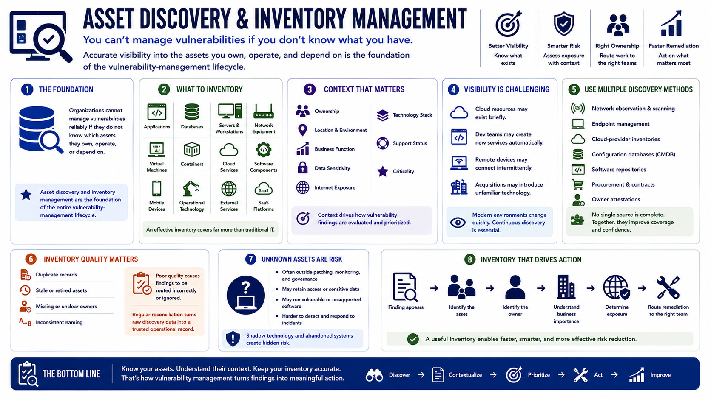

What Is Vulnerability Management?
Asset Discovery and Visibility
Connecting to LMS... Progress: in progress
Version 1.0 | Date: 2026-06-18 | Educational overview of vulnerability management concepts.

Narration
Organizations cannot manage vulnerabilities reliably if they do not know which assets they own, operate, or depend on. Asset discovery and inventory management are therefore the foundation of the entire vulnerability-management lifecycle.
An effective inventory covers more than traditional servers and workstations. It can include applications, databases, network equipment, virtual machines, containers, cloud services, software components, mobile devices, operational technology, and externally hosted services.
Each asset needs useful context. Ownership, location, environment, business function, data sensitivity, internet exposure, technology stack, support status, and criticality all influence how vulnerability findings should be evaluated and assigned.
Visibility is difficult because modern environments change quickly. Cloud resources may exist briefly, development teams may create new services automatically, remote devices may connect intermittently, and acquisitions may introduce unfamiliar technology.
Discovery methods should complement one another. Organizations may combine network observation, endpoint management, cloud-provider inventories, configuration databases, software repositories, procurement records, and owner attestations to improve coverage.
Inventory quality matters as much as inventory size. Duplicate records, stale assets, missing owners, and unclear naming can cause findings to be routed incorrectly or ignored. Regular reconciliation helps turn raw discovery data into an operational asset record.
Unknown assets deserve attention because they often sit outside normal patching, monitoring, and governance processes. Shadow technology and abandoned systems can retain access, sensitive information, or vulnerable software long after their original purpose has changed.
A useful inventory supports action. When a finding appears, the program should be able to identify the asset owner, understand its business importance, determine exposure, and route remediation work to the team that can address it.